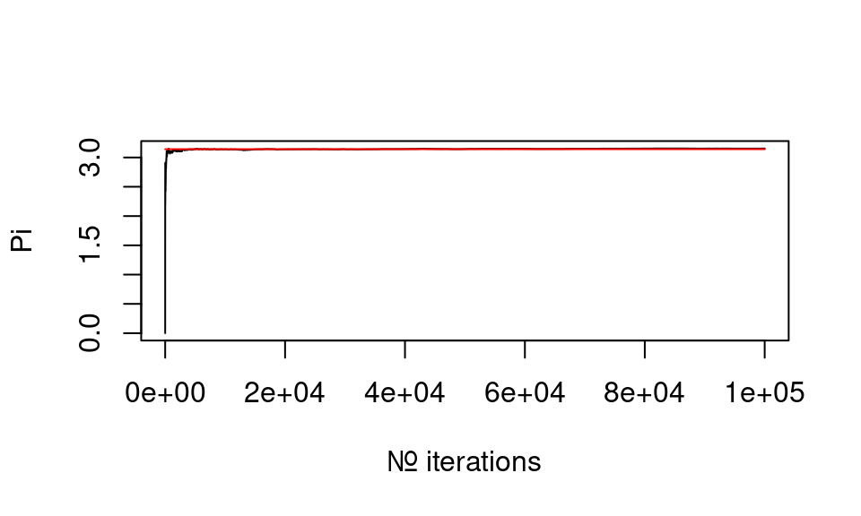

#install to location
#install.packages("lavaan", dependencies=TRUE, lib="C:/Program Files/R/lib")
#install.packages("lavaan", dependencies=TRUE, lib="~/lib/r-cran")
#load
library(lavaan)## This is lavaan 0.6-8
## lavaan is FREE software! Please report any bugs.sim <- function(l) {
c <- rep(0,l)
hits <- 0
pow2 <- function(x) {
x2 <- sqrt( x[1]*x[1]+x[2]*x[2] )
return(x2)
}
for(i in 1:l){
x = runif(2,-1,1)
if( pow2(x) <=1 ){
hits <- hits + 1
}
dens <- hits/i
pi_partial = dens*4
c[i] = pi_partial
}
return(c)
}The accuracy of the calculation increases with the number of iterations
size <- 100000
res <- sim(size)
plot(res[1:size],type='l', xlab="Nr. iterations", ylab="Pi")
lines(rep(pi,size)[1:size], col = 'red')
with text and all..
#?HolzingerSwineford1939
HS.model <- ' visual =~ x1 + x2 + x3
textual =~ x4 + x5 + x6
speed =~ x7 + x8 + x9 '
fit <- cfa(HS.model, data=HolzingerSwineford1939)
summary(fit, fit.measures=TRUE)## lavaan 0.6-8 ended normally after 35 iterations
##
## Estimator ML
## Optimization method NLMINB
## Number of model parameters 21
##
## Number of observations 301
##
## Model Test User Model:
##
## Test statistic 85.306
## Degrees of freedom 24
## P-value (Chi-square) 0.000
##
## Model Test Baseline Model:
##
## Test statistic 918.852
## Degrees of freedom 36
## P-value 0.000
##
## User Model versus Baseline Model:
##
## Comparative Fit Index (CFI) 0.931
## Tucker-Lewis Index (TLI) 0.896
##
## Loglikelihood and Information Criteria:
##
## Loglikelihood user model (H0) -3737.745
## Loglikelihood unrestricted model (H1) -3695.092
##
## Akaike (AIC) 7517.490
## Bayesian (BIC) 7595.339
## Sample-size adjusted Bayesian (BIC) 7528.739
##
## Root Mean Square Error of Approximation:
##
## RMSEA 0.092
## 90 Percent confidence interval - lower 0.071
## 90 Percent confidence interval - upper 0.114
## P-value RMSEA <= 0.05 0.001
##
## Standardized Root Mean Square Residual:
##
## SRMR 0.065
##
## Parameter Estimates:
##
## Standard errors Standard
## Information Expected
## Information saturated (h1) model Structured
##
## Latent Variables:
## Estimate Std.Err z-value P(>|z|)
## visual =~
## x1 1.000
## x2 0.554 0.100 5.554 0.000
## x3 0.729 0.109 6.685 0.000
## textual =~
## x4 1.000
## x5 1.113 0.065 17.014 0.000
## x6 0.926 0.055 16.703 0.000
## speed =~
## x7 1.000
## x8 1.180 0.165 7.152 0.000
## x9 1.082 0.151 7.155 0.000
##
## Covariances:
## Estimate Std.Err z-value P(>|z|)
## visual ~~
## textual 0.408 0.074 5.552 0.000
## speed 0.262 0.056 4.660 0.000
## textual ~~
## speed 0.173 0.049 3.518 0.000
##
## Variances:
## Estimate Std.Err z-value P(>|z|)
## .x1 0.549 0.114 4.833 0.000
## .x2 1.134 0.102 11.146 0.000
## .x3 0.844 0.091 9.317 0.000
## .x4 0.371 0.048 7.779 0.000
## .x5 0.446 0.058 7.642 0.000
## .x6 0.356 0.043 8.277 0.000
## .x7 0.799 0.081 9.823 0.000
## .x8 0.488 0.074 6.573 0.000
## .x9 0.566 0.071 8.003 0.000
## visual 0.809 0.145 5.564 0.000
## textual 0.979 0.112 8.737 0.000
## speed 0.384 0.086 4.451 0.000